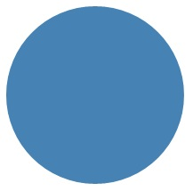
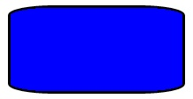
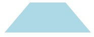
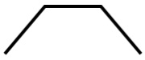
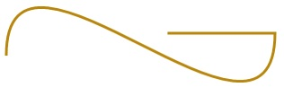
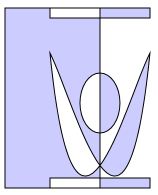

Draw shapes
Learn how to draw shapes, such as ellipses, rectangles, polygons, and paths. The Path class is the way to visualize a fairly complex vector-based drawing language in a XAML UI; for example, you can draw Bezier curves.
- Important APIs: Path class, Microsoft.UI.Xaml.Shapes namespace, Microsoft.UI.Xaml.Media namespace
Two sets of classes define a region of space in XAML UI: Shape classes and Geometry classes. The main difference between these classes is that a Shape has a brush associated with it and can be rendered to the screen, and a Geometry simply defines a region of space and is not rendered unless it helps contribute information to another UI property. You can think of a Shape as a UIElement with its boundary defined by a Geometry. This topic covers mainly the Shape classes.
The Shape classes are Line, Ellipse, Rectangle, Polygon, Polyline, and Path. Path is interesting because it can define an arbitrary geometry, and the Geometry class is involved here because that's one way to define the parts of a Path.
Fill and Stroke for shapes
For a Shape to render to the app canvas, you must associate a Brush with it. Set the Fill property of the Shape to the Brush you want. For more info about brushes, see Using brushes.
A Shape can also have a Stroke, which is a line that is drawn around the shape's perimeter. A Stroke also requires a Brush that defines its appearance, and should have a non-zero value for StrokeThickness. StrokeThickness is a property that defines the perimeter's thickness around the shape edge. If you don't specify a Brush value for Stroke, or if you set StrokeThickness to 0, then the border around the shape is not drawn.
Ellipse
An Ellipse is a shape with a curved perimeter. To create a basic Ellipse, specify a Width, Height, and a Brush for the Fill.
The next example creates an Ellipse with a Width of 200 and a Height of 200, and uses a SteelBlue colored SolidColorBrush as its Fill.
<Ellipse Fill="SteelBlue" Height="200" Width="200" />
var ellipse1 = new Ellipse();
ellipse1.Fill = new SolidColorBrush(Colors.SteelBlue);
ellipse1.Width = 200;
ellipse1.Height = 200;
// When you create a XAML element in code, you have to add
// it to the XAML visual tree. This example assumes you have
// a panel named 'layoutRoot' in your XAML file, like this:
// <Grid x:Name="layoutRoot>
layoutRoot.Children.Add(ellipse1);
Here's the rendered Ellipse.

In this case the Ellipse is what most people would consider a circle, but that's how you declare a circle shape in XAML: use an Ellipse with equal Width and Height.
When an Ellipse is positioned in a UI layout, its size is assumed to be the same as a rectangle with that Width and Height; the area outside the perimeter does not have rendering but still is part of its layout slot size.
A set of 6 Ellipse elements are part of the control template for the ProgressRing control, and 2 concentric Ellipse elements are part of a RadioButton.
Rectangle
A Rectangle is a four-sided shape with its opposite sides being equal. To create a basic Rectangle, specify a Width, a Height, and a Fill.
You can round the corners of a Rectangle. To create rounded corners, specify a value for the RadiusX and RadiusY properties. These properties specify the x-axis and y-axis of an ellipse that defines the curve of the corners. The maximum allowed value of RadiusX is the Width divided by two and the maximum allowed value of RadiusY is the Height divided by two.
The next example creates a Rectangle with a Width of 200 and a Height of 100. It uses a Blue value of SolidColorBrush for its Fill and a Black value of SolidColorBrush for its Stroke. We set the StrokeThickness to 3. We set the RadiusX property to 50 and the RadiusY property to 10, which gives the Rectangle rounded corners.
<Rectangle Fill="Blue"
Width="200"
Height="100"
Stroke="Black"
StrokeThickness="3"
RadiusX="50"
RadiusY="10" />
var rectangle1 = new Rectangle();
rectangle1.Fill = new SolidColorBrush(Colors.Blue);
rectangle1.Width = 200;
rectangle1.Height = 100;
rectangle1.Stroke = new SolidColorBrush(Colors.Black);
rectangle1.StrokeThickness = 3;
rectangle1.RadiusX = 50;
rectangle1.RadiusY = 10;
// When you create a XAML element in code, you have to add
// it to the XAML visual tree. This example assumes you have
// a panel named 'layoutRoot' in your XAML file, like this:
// <Grid x:Name="layoutRoot>
layoutRoot.Children.Add(rectangle1);
Here's the rendered Rectangle.

There are some scenarios for UI definitions where instead of using a Rectangle, a Border might be more appropriate. If your intention is to create a rectangle shape around other content, it might be better to use Border because it can have child content and will automatically size around that content, rather than using the fixed dimensions for height and width like Rectangle does. A Border also has the option of having rounded corners if you set the CornerRadius property.
On the other hand, a Rectangle is probably a better choice for control composition. A Rectangle shape is seen in many control templates because it's used as a "FocusVisual" part for focusable controls. Whenever the control is in a "Focused" visual state, this rectangle is made visible, in other states it's hidden.
Polygon
A Polygon is a shape with a boundary defined by an arbitrary number of points. The boundary is created by connecting a line from one point to the next, with the last point connected to the first point. The Points property defines the collection of points that make up the boundary. In XAML, you define the points with a comma-separated list. In code-behind you use a PointCollection to define the points and you add each individual point as a Point value to the collection.
You don't need to explicitly declare the points such that the start point and end point are both specified as the same Point value. The rendering logic for a Polygon assumes that you are defining a closed shape and will connect the end point to the start point implicitly.
The next example creates a Polygon with 4 points set to (10,200), (60,140), (130,140), and (180,200). It uses a LightBlue value of SolidColorBrush for its Fill, and has no value for Stroke so it has no perimeter outline.
<Polygon Fill="LightBlue"
Points="10,200,60,140,130,140,180,200" />
var polygon1 = new Polygon();
polygon1.Fill = new SolidColorBrush(Colors.LightBlue);
var points = new PointCollection();
points.Add(new Windows.Foundation.Point(10, 200));
points.Add(new Windows.Foundation.Point(60, 140));
points.Add(new Windows.Foundation.Point(130, 140));
points.Add(new Windows.Foundation.Point(180, 200));
polygon1.Points = points;
// When you create a XAML element in code, you have to add
// it to the XAML visual tree. This example assumes you have
// a panel named 'layoutRoot' in your XAML file, like this:
// <Grid x:Name="layoutRoot>
layoutRoot.Children.Add(polygon1);
Here's the rendered Polygon.

Tip
A Point value is often used as a type in XAML for scenarios other than declaring the vertices of shapes. For example, a Point is part of the event data for touch events, so you can know exactly where in a coordinate space the touch action occurred. For more info about Point and how to use it in XAML or code, see the API reference topic for Point.
Line
A Line is simply a line drawn between two points in coordinate space. A Line ignores any value provided for Fill, because it has no interior space. For a Line, make sure to specify values for the Stroke and StrokeThickness properties, because otherwise the Line won't render.
You don't use Point values to specify a Line shape, instead you use discrete Double values for X1, Y1, X2 and Y2. This enables minimal markup for horizontal or vertical lines. For example, <Line Stroke="Red" X2="400"/> defines a horizontal line that is 400 pixels long. The other X,Y properties are 0 by default, so in terms of points this XAML would draw a line from (0,0) to (400,0). You could then use a TranslateTransform to move the entire Line, if you wanted it to start at a point other than (0,0).
<Line Stroke="Red" X2="400"/>
var line1 = new Line();
line1.Stroke = new SolidColorBrush(Colors.Red);
line1.X2 = 400;
// When you create a XAML element in code, you have to add
// it to the XAML visual tree. This example assumes you have
// a panel named 'layoutRoot' in your XAML file, like this:
// <Grid x:Name="layoutRoot>
layoutRoot.Children.Add(line1);
Polyline
A Polyline is similar to a Polygon in that the boundary of the shape is defined by a set of points, except the last point in a Polyline is not connected to the first point.
Note
You could explicitly have an identical start point and end point in the Points set for the Polyline, but in that case you probably could have used a Polygon instead.
If you specify a Fill of a Polyline, the Fill paints the interior space of the shape, even if the start point and end point of the Points set for the Polyline do not intersect. If you do not specify a Fill, then the Polyline is similar to what would have rendered if you had specified several individual Line elements where the start points and end points of consecutive lines intersected.
As with a Polygon, the Points property defines the collection of points that make up the boundary. In XAML, you define the points with a comma-separated list. In code-behind, you use a PointCollection to define the points and you add each individual point as a Point structure to the collection.
This example creates a Polyline with four points set to (10,200), (60,140), (130,140), and (180,200). A Stroke is defined but not a Fill.
<Polyline Stroke="Black"
StrokeThickness="4"
Points="10,200,60,140,130,140,180,200" />
var polyline1 = new Polyline();
polyline1.Stroke = new SolidColorBrush(Colors.Black);
polyline1.StrokeThickness = 4;
var points = new PointCollection();
points.Add(new Windows.Foundation.Point(10, 200));
points.Add(new Windows.Foundation.Point(60, 140));
points.Add(new Windows.Foundation.Point(130, 140));
points.Add(new Windows.Foundation.Point(180, 200));
polyline1.Points = points;
// When you create a XAML element in code, you have to add
// it to the XAML visual tree. This example assumes you have
// a panel named 'layoutRoot' in your XAML file, like this:
// <Grid x:Name="layoutRoot>
layoutRoot.Children.Add(polyline1);
Here's the rendered Polyline. Notice that the first and last points are not connected by the Stroke outline as they are in a Polygon.

Path
A Path is the most versatile Shape because you can use it to define an arbitrary geometry. But with this versatility comes complexity. Let's now look at how to create a basic Path in XAML.
You define the geometry of a path with the Data property. There are two techniques for setting Data:
- You can set a string value for Data in XAML. In this form, the Path.Data value is consuming a serialization format for graphics. You typically don't text-edit this value in string form after it is first established. Instead, you use design tools that enable you to work in a design or drawing metaphor on a surface. Then you save or export the output, and this gives you a XAML file or XAML string fragment with Path.Data information.
- You can set the Data property to a single Geometry object. This can be done in code or in XAML. That single Geometry is typically a GeometryGroup, which acts as a container that can composite multiple geometry definitions into a single object for purposes of the object model. The most common reason for doing this is because you want to use one or more of the curves and complex shapes that can be defined as Segments values for a PathFigure, for example BezierSegment.
This example shows a Path that might have resulted from using Blend for Visual Studio to produce just a few vector shapes and then saving the result as XAML. The total Path consists of a Bezier curve segment and a line segment. The example is mainly intended to give you some examples of what elements exist in the Path.Data serialization format and what the numbers represent.
This Data begins with the move command, indicated by "M", which establishes an absolute start point for the path.
The first segment is a cubic Bezier curve that begins at (100,200) and ends at (400,175), which is drawn by using the two control points (100,25) and (400,350). This segment is indicated by the "C" command in the Data attribute string.
The second segment begins with an absolute horizontal line command "H", which specifies a line drawn from the preceding subpath endpoint (400,175) to a new endpoint (280,175). Because it's a horizontal line command, the value specified is an x-coordinate.
<Path Stroke="DarkGoldenRod"
StrokeThickness="3"
Data="M 100,200 C 100,25 400,350 400,175 H 280" />
Here's the rendered Path.

The next example shows a usage of the other technique we discussed: a GeometryGroup with a PathGeometry. This example exercises some of the contributing geometry types that can be used as part of a PathGeometry: PathFigure and the various elements that can be a segment in PathFigure.Segments.
<Path Stroke="Black" StrokeThickness="1" Fill="#CCCCFF">
<Path.Data>
<GeometryGroup>
<RectangleGeometry Rect="50,5 100,10" />
<RectangleGeometry Rect="5,5 95,180" />
<EllipseGeometry Center="100, 100" RadiusX="20" RadiusY="30"/>
<RectangleGeometry Rect="50,175 100,10" />
<PathGeometry>
<PathGeometry.Figures>
<PathFigureCollection>
<PathFigure IsClosed="true" StartPoint="50,50">
<PathFigure.Segments>
<PathSegmentCollection>
<BezierSegment Point1="75,300" Point2="125,100" Point3="150,50"/>
<BezierSegment Point1="125,300" Point2="75,100" Point3="50,50"/>
</PathSegmentCollection>
</PathFigure.Segments>
</PathFigure>
</PathFigureCollection>
</PathGeometry.Figures>
</PathGeometry>
</GeometryGroup>
</Path.Data>
</Path>
var path1 = new Microsoft.UI.Xaml.Shapes.Path();
path1.Fill = new SolidColorBrush(Windows.UI.Color.FromArgb(255, 204, 204, 255));
path1.Stroke = new SolidColorBrush(Colors.Black);
path1.StrokeThickness = 1;
var geometryGroup1 = new GeometryGroup();
var rectangleGeometry1 = new RectangleGeometry();
rectangleGeometry1.Rect = new Rect(50, 5, 100, 10);
var rectangleGeometry2 = new RectangleGeometry();
rectangleGeometry2.Rect = new Rect(5, 5, 95, 180);
geometryGroup1.Children.Add(rectangleGeometry1);
geometryGroup1.Children.Add(rectangleGeometry2);
var ellipseGeometry1 = new EllipseGeometry();
ellipseGeometry1.Center = new Point(100, 100);
ellipseGeometry1.RadiusX = 20;
ellipseGeometry1.RadiusY = 30;
geometryGroup1.Children.Add(ellipseGeometry1);
var pathGeometry1 = new PathGeometry();
var pathFigureCollection1 = new PathFigureCollection();
var pathFigure1 = new PathFigure();
pathFigure1.IsClosed = true;
pathFigure1.StartPoint = new Windows.Foundation.Point(50, 50);
pathFigureCollection1.Add(pathFigure1);
pathGeometry1.Figures = pathFigureCollection1;
var pathSegmentCollection1 = new PathSegmentCollection();
var pathSegment1 = new BezierSegment();
pathSegment1.Point1 = new Point(75, 300);
pathSegment1.Point2 = new Point(125, 100);
pathSegment1.Point3 = new Point(150, 50);
pathSegmentCollection1.Add(pathSegment1);
var pathSegment2 = new BezierSegment();
pathSegment2.Point1 = new Point(125, 300);
pathSegment2.Point2 = new Point(75, 100);
pathSegment2.Point3 = new Point(50, 50);
pathSegmentCollection1.Add(pathSegment2);
pathFigure1.Segments = pathSegmentCollection1;
geometryGroup1.Children.Add(pathGeometry1);
path1.Data = geometryGroup1;
// When you create a XAML element in code, you have to add
// it to the XAML visual tree. This example assumes you have
// a panel named 'layoutRoot' in your XAML file, like this:
// <Grid x:Name="layoutRoot">
layoutRoot.Children.Add(path1);
Here's the rendered Path.

Using PathGeometry may be more readable than populating a Path.Data string. On the other hand, Path.Data uses a syntax compatible with Scalable Vector Graphics (SVG) image path definitions so it may be useful for porting graphics from SVG, or as output from a tool like Blend.
UWP and WinUI 2
Important
The information and examples in this article are optimized for apps that use the Windows App SDK and WinUI 3, but are generally applicable to UWP apps that use WinUI 2. See the UWP API reference for platform specific information and examples.
This section contains information you need to use the control in a UWP or WinUI 2 app.
APIs for these shapes exist in the Windows.UI.Xaml.Shapes namespace.